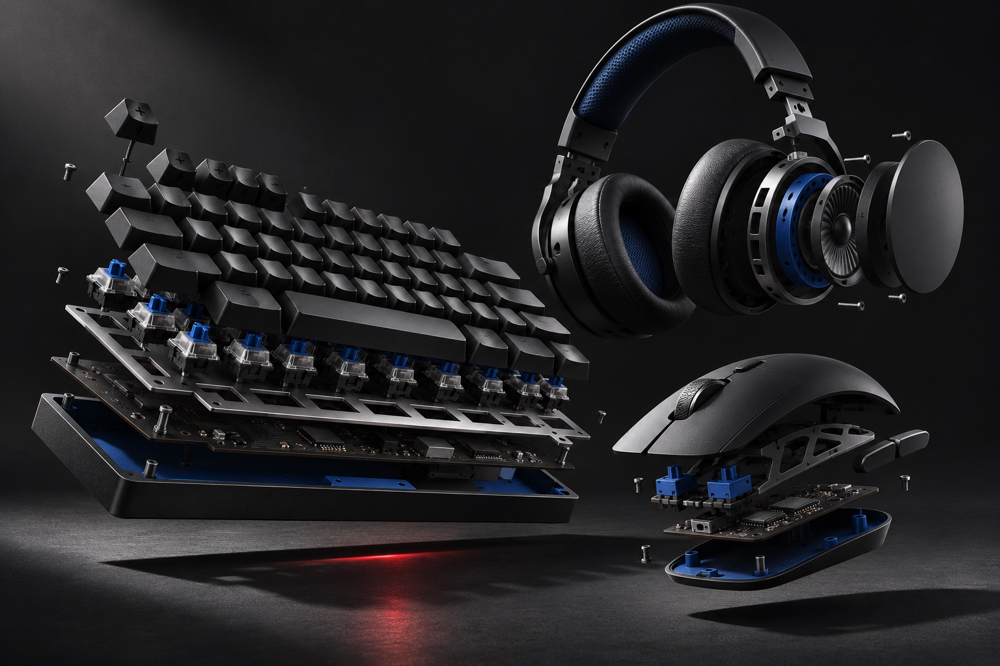

Учебный проект / магазин
ExoTech
Магазин игровой периферии: каталог, выбор товара, корзина и личный кабинет.
Открыть сайт
Задача
От поиска устройства до оформления
Собрать интерфейс магазина, где можно найти периферию, изучить характеристики, добавить товары в корзину и пройти оформление заказа.
Решение
Сначала найти подходящее
Каталог получает данные из базы. Поиск, категории, бренды, диапазон цены и наличие помогают сузить выбор. Сортировка меняет порядок товаров.
Интерфейс
Характеристики рядом с товаром
Карточки показывают изображение, название, цену, наличие и основные параметры. На странице товара можно подробнее изучить устройство перед добавлением в корзину.
Сценарий
Корзина и оформление
Выбранные товары собираются в корзине. При оформлении интерфейс проверяет данные и показывает состояния загрузки, ошибки или завершения. Реальная онлайн-оплата и доставка не выполняются.
Личный кабинет
Аккаунт и заказы
В проекте реализованы регистрация, вход и личный кабинет. База данных хранит аккаунты и заказы; интерфейс связывает каталог с оформлением и историей пользователя.
Результат
Полный интерфейс магазина
Учебный проект демонстрирует несколько связанных экранов и работу с данными. Его задача в портфолио — показать каталог, фильтрацию, корзину и кабинет, без заявлений о реальных продажах.
HTML / CSS / JavaScript / база данных
Посмотреть сайт